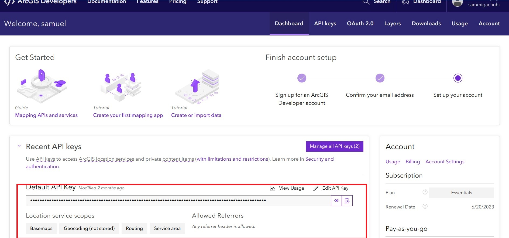
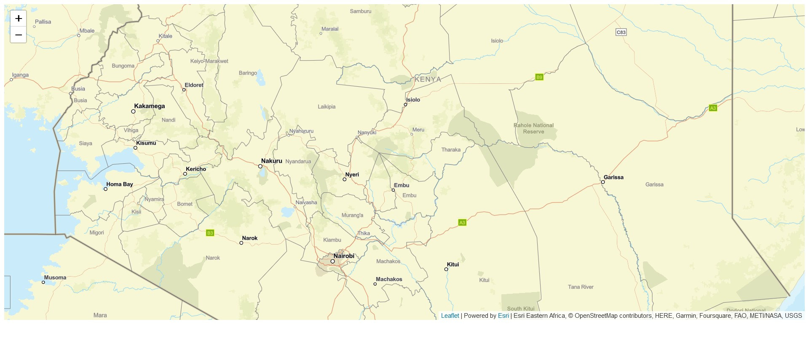
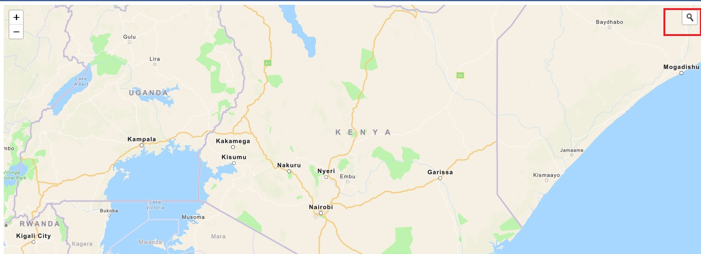
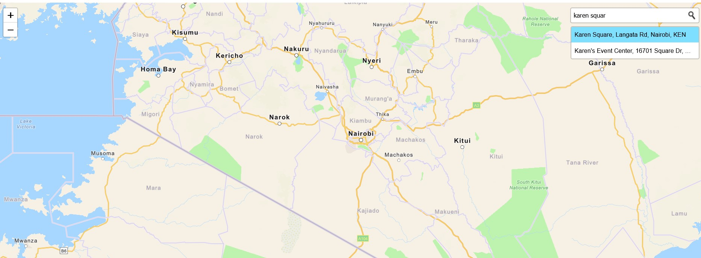
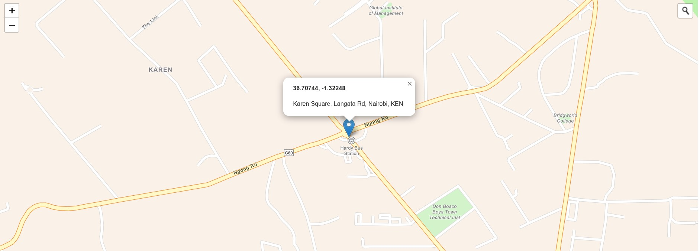

Chapter 14 Leaflet in ESRI
Alright. If you are a GIS practitioner, you have (most) probably heard about ESRI, one of the world’s leading geospatial software and services provider. You (might) have also come across various ESRI basemap servers, such as topographic, streets and imagery layers. They also have plugins that allow leaflet users to access the ArcGIS functionalities. For example, the ESRI plugins for leaflet allow you to access some ESRI basemaps and products, while also allowing you to become an ESRI ArcGIS JavaScript developer. Quite a mouthful of a career name.
To use ESRI Leaflet, you have to create an ArcGIS Developer account and also get an API key. Kindly do so before proceeding.
14.1 ESRI Leaflet plugins
As we had mentioned earlier, you need ESRI leaflet plugins to fire up ESRI power in your leaflet environment. Alright. Remember your map.html file? You have probably added a plethora of <link>s and <script>s to your map.html file but bear with us a little longer. Add the following <script>s to the <head> element of your map.html.
<!-- Load Esri Leaflet from CDN -->
<script src="https://unpkg.com/esri-leaflet@3.0.10/dist/esri-leaflet.js"></script>
<script src="https://unpkg.com/esri-leaflet-vector@4.0.2/dist/esri-leaflet-vector.js"></script>
Create a new JavaScript file called esri_leaflet.js and get ready to enjoy ESRI services as though you made them!
14.2 Creating an ESRI Leaflet map
On your blank esri_leaflet.js file, create a variable to store your Application Programming Interface (API) Key. This key is important to access your ESRI benefits, much like the magic phrase “Open Sesame” opens the doorway to a cave full of treasures as in the legendary story of Ali Baba and the Forty Thieves. Of course I am no thief.
Below is an example of how to access your API key from your ArcGIS Developer account.
knitr::include_graphics(rep('D:/gachuhi/my-leaflet/images/esri_leaflet_api.jpg'))
Copy paste that key to your esri_leaflet.js file.
const apiKey = "Your key";
Of course, don’t expect me to showcase mine to the entire world.
Anyways, let’s proceed to create a basemap. To create one, just create a variable called basemapEnum that stores the ESRI basemap identifier. What is that last thing? It is basically a basestyle map and in ESRI, at least when using Leaflet, it is accessed by parsing the provider name and the desired style, like so: {Provider}:{Style name} or
{Provider}:{Style name}:{Component}.
const basemapEnum = "ArcGIS:Streets";Alright. It’s about time we fired up our mapping power. Create an ESRI leaflet map instance much like we have always been doing.
const map = L.map("myMap", {
minZoom: 2
}).setView([0.3556, 37.5833], 6.5);We had created a basemap variable earlier, so we will parse it to the L.esri.Vector.vectorBasemapLayer class which is responsible for create basemaps. Actually one can also parse the {Provider}:{Style name} to the L.esri.vector.vectorBasemapLayer() class but our method of using variable names seems far much more cleaner.
L.esri.Vector.vectorBasemapLayer(basemapEnum, {
apiKey: apiKey,
}).addTo(map);
Now open your map.html file. What do you see?
knitr::include_graphics(rep('D:/gachuhi/my-leaflet/images/esri_leaflet_basemap.jpg'))
Now imagine there are other styles as shown in this webpage. Spoil yourself a bit.
14.3 Geocode search
Of course there are other ESRI Leaflet functionalities. I must confess I wanted to know how to add a raster layer, such as .tif to either Leaflet or ESRI leaflet but they all seem to favour tiled layers. The former has a plugin to do so, but was too complicated (still trying unsuccessfully). Nevertheless, there are other cool services that ESRI leaflet offers, such as geocode search2.
Let’s do that.
14.4 Add search bar
Add the following <link> and <script> to your <head> element.
<!-- Load Esri Leaflet Geocoder from CDN -->
<link rel="stylesheet" href="https://unpkg.com/esri-leaflet-geocoder@3.1.4/dist/esri-leaflet-geocoder.css">
<script src="https://unpkg.com/esri-leaflet-geocoder@3.1.4/dist/esri-leaflet-geocoder.js"></script>
Time to add a search control widget to the topright of our ESRI leaflet map. Search control widgets are created using the L.esri.Geocoding.geosearch class which we shall parse to a variable called searchControl.
const searchControl = L.esri.Geocoding.geosearch({
position: "topright",
placeholder: "Enter an address or place e.g. 1 York St",
useMapBounds: false,
}).addTo(map);
Just like in leaflet ESRI leaflet constructors have their options. Please refer the options for this specific constructor here.
Another small thing; change your const basemapEnum to read ArcGis:Navigation.
const basemapEnum = "ArcGIS:Navigation";If you refresh your map.html file, apart from having a new basemap style, you will see a new search bar at the top right. However, it is non-functional. It takes us nowhere.
knitr::include_graphics(rep('D:/gachuhi/my-leaflet/images/search_bar.jpg'))
14.5 Make the search bar functional
In order to make the search bar do what it says, we will set the value of the providers key to a arcgisOnlineProvider. The latter is instantiated with the constructor L.esri.Geocoding.arcgisOnlineProvider. Okay where did you get it from? Well ESRI has various open source tutorials on its platform.
const searchControl = L.esri.Geocoding.geosearch({
position: "topright",
placeholder: "Enter an address or place e.g. 1 York St",
useMapBounds: false,
// Add provider
providers: [
L.esri.Geocoding.arcgisOnlineProvider({
apikey: apiKey,
nearby: {
lat: 0.3556,
lng: 37.5833
}
})
]
}).addTo(map);
Now try your search bar again. Some location names appear as you type them in, and if you press Enter it takes you to the exact location but there is no marker to pinpoint that specific address. We will sort that latter.
knitr::include_graphics(rep('D:/gachuhi/my-leaflet/images/searchable.jpg'))
We will add a layer group to store the geocoding results.
const results = L.layerGroup().addTo(map);
We will create an event handler to access the data from the search results. We shall also add a clearLayers call to remove the previous data from the layer group. This is beginning to sound complicated, but I’m just following along the ESRI Leaflet geocoding tutorial.
searchControl.on("results", (data) => {
results.clearLayers();
});
The following loop adds the coordinates of the searched location to the marker. This loop goes into the searchControl.
for (let i = data.results.length - 1; i >= 0; i--) {
const marker = L.marker(data.results[i].latlng);
results.addLayer(marker);
}The lngLatString variable below will store the rounded coordinates, and our familiar bindPopup and openPopup will show the coordinates and our address.
const lngLatString = `${Math.round(data.results[i].latlng.lng * 100000) / 100000}, ${
Math.round(data.results[i].latlng.lat * 100000) / 100000
}`;
marker.bindPopup(`<b>${lngLatString}</b><p>${data.results[i].properties.LongLabel}</p>`);
results.addLayer(marker);
marker.openPopup();The entire searchControl code block should look like below.
searchControl.on("results", (data) => {
results.clearLayers();
for (let i = data.results.length - 1; i >= 0; i--) {
const marker = L.marker(data.results[i].latlng);
const lngLatString = `${Math.round(data.results[i].latlng.lng * 100000) / 100000}, ${
Math.round(data.results[i].latlng.lat * 100000) / 100000
}`;
marker.bindPopup(`<b>${lngLatString}</b><p>${data.results[i].properties.LongLabel}</p>`);
results.addLayer(marker);
marker.openPopup();
}
});
So now when you search for a particular place in the search bar and press Enter, a marker and with a pop up showcasing the address and longitude-latitude coordinates of the location should appear.
knitr::include_graphics(rep('D:/gachuhi/my-leaflet/images/search_success.jpg'))
There are many more tutorials on using ESRI Leaflet in the ArcGIS Developers website.
Here are the files used in this exercise.
Geocoding is the process of converting address or place text into a location. The geocoding service provides address and place geocoding as well as reverse geocoding↩︎